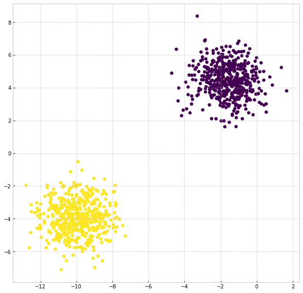

Get Started with CLASSIX
Clustering is a widely-used unsupervised learning technique to find patterns and structures in data. The applications of clustering are wide-ranging, including areas like finance, traffic, civil engineering, and bioinformatics. Clustering algorithms aim to group the data points into distinct clusters such that points within a cluster share similar characteristics on the basis of spatial properties, while points in two distinct clusters are less similar. It might be easy for a human to perceive the clusters with a small sample in a small (1 or 2) dimensional space, however, in practice, the real world data with increasing dimensions and size of the data usually make a human out of reach. Considering data provided with labels are considerably rare and expensive, reliable and easy-to-tune explainable clustering methods are highly desirable.
We introduce a novel clustering method called CLASSIX. The appealing characteristics of CLASSIX include fast speed, scalable clustering and explainable descriptions and visualization of clusters. It consists of two phases, namely a greedy aggregation phase of the sorted data into groups of nearby data points, followed by the merging of groups into clusters. The algorithm is controlled by two scalar parameters, namely a distance parameter for the aggregation and another parameter controlling the minimal cluster size. Extensive experiments are conducted to give a comprehensive evaluation of the clustering performance on synthetic and real-world datasets, with various cluster shapes and low to high feature dimensionality. Our experiments demonstrate that CLASSIX competes with state-of-the-art clustering algorithms. The algorithm has linear space complexity and achieves near linear time complexity on a wide range of problems. Its inherent simplicity allows for the generation of intuitive explanations of the computed clusters. This documentation will provide you with a beginner-friendly tutorial, and show you how to get a quick start!
Installation guide
CLASSIX has the following dependencies for its clustering functionality:
cython>=0.29.4
numpy>=1.20.0
scipy>1.6.0
requests
and requires the following packages for data visualization:
matplotlib
pandas
To install the current release via PIP use:
pip install ClassixClustering
To check the installation, simply run:
python -m pip show ClassixClustering
If you want to uninstall it, you can use:
pip uninstall ClassixClustering
For conda users, to install this package with conda run:
conda install -c nla.stefan.xinye classix
To check the installation, run:
conda list classix
and uninstall it with
conda uninstall classix
Download this repository via:
git clone https://github.com/nla-group/CLASSIX.git
Quick start
CLASSIX follows a similar API design as scikit-learn library. So if you are familiar with scikit-learn, you can quickly master the CLASSIX library to do a wonderful clustering. We demonstrate a toy application of CLASSIX’s clustering on simple data.
After importing the required python libraries, we generate isotropic Gaussian blobs with 2 clusters using sklearn.datasets tool. The sample is exhibited with 2 clusters of 1000 2-dimensional data. Then, we employ CLASSIX with the simple setting:
from sklearn.datasets import make_blobs
from classix import CLASSIX
X, y = make_blobs(n_samples=1000, centers=2, n_features=2, random_state=1)
clx = CLASSIX(radius=0.5, minPts=13)
clx.fit(X)
Remember
By default, CLASSIX will use pca sorting and apply distance-based merging.
After that, to get the clustering result, we just need to load clx.labels_. Also you can return the cluster labels directly by labels = clx.fit_transform(X).
Now we plot the clustering result:
import matplotlib.pyplot as plt
plt.figure(figsize=(10,10))
plt.scatter(X[:,0], X[:,1], c=clx.labels_)
plt.show()
The result is as belows:
That is a basic setting tutorial of CLASSIX, which applied to most cases. If you want to learn more, please go through other sections of the documentation.